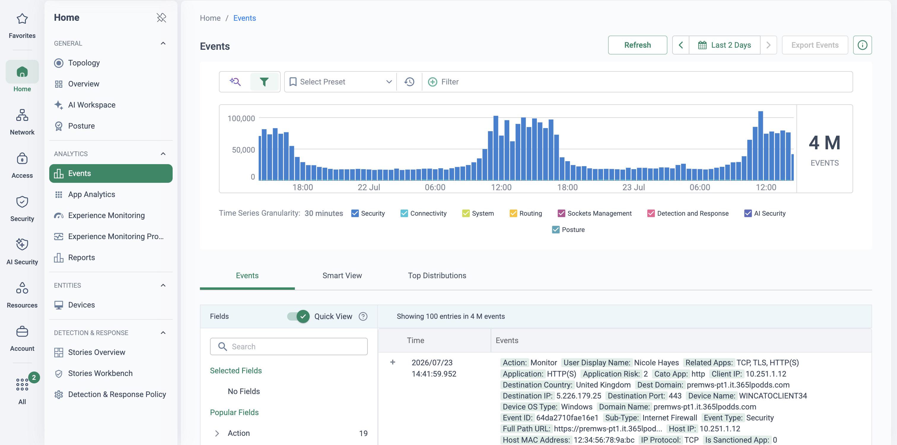

Policy translation is where migrations stall
A ZIA estate that has run for five years typically carries hundreds of rules across half a dozen policy engines — URL filtering, cloud firewall, Cloud App Control, DLP, SSL inspection — plus the settings pages around them. Copying all of it into Cato verbatim is the single most reliable way to wreck a migration: dead rules come across, contradictions survive, and every Zscaler quirk gets faithfully re-implemented on a platform that does not share it.
Cato Professional Services runs policy conversion as a four-phase process instead — EXPORT → REVIEW & MAP → DEPLOY (monitor-first) → OPTIMISE. The export scope for ZIA is broad and deliberate: policies, URL filtering, firewall, web security, DLP, Cloud App policies, Advanced Threat Protection, SSL inspection, bandwidth control, and user/group settings. Those map to the Cato Internet firewall, App Control (tenant restrictions, CASB, DLP), Threat Prevention, SCIM groups and TLS Inspection. The review phase is where the value is created: rules are rationalised on hit counts first, so the policy that lands in Cato is the policy the business actually uses — never a lift-and-shift.
This page covers the ZIA policy domains. ZPA — segment groups, access policies, Browser Access, posture profiles mapping to the Cato WAN firewall and access control — is covered on the main Zscaler to Cato playbook, alongside the interim architectures and dual-agent cutover.
This page was authored from research — vendor documentation and the Cato PS migration deck — not from a verified delivery. Validate the mappings and gotchas against a current Cato PS engagement before presenting them as a committed conversion plan.
ZIA Firewall policies → Cato Internet firewall
ZIA's cloud firewall is an ordered Firewall Filtering rulebase — rules match on users, groups, departments, locations, network services and network applications, with NAT Control and DNS Control as sibling policies and a Default Firewall Filtering Rule at the bottom. Export the rulebase and its referenced objects (service groups, application groups, source IP groups, locations) as JSON via the ZIA API, and capture the settings-style pages that have no rulebase as configuration screenshots.
| ZIA construct | Cato construct |
|---|---|
| Firewall Filtering rulebase (ordered, identity-aware) | Internet firewall — ordered rulebase with User Awareness |
| Default Firewall Filtering Rule (final catch-all) | Implicit any-any allow at the bottom of the Internet firewall |
| Network services & service groups | Services — predefined and custom |
| Network application groups | Applications & application categories |
| Locations / sub-locations · source IP groups | Sites, network ranges & IP range objects |
| Departments & groups (hosted DB or synced) | SCIM-provisioned user groups |
| Bandwidth Control classes per location | Bandwidth Management priorities on network rules |
| NAT Control (source NAT per location) | Different model — allocated egress IPs; scope with PS |
Semantic gotchas
- ZIA only ever saw traffic forwarded to it (GRE/IPsec tunnels, ZCC). Cato sockets see every flow — expect hit patterns to shift and rules that never matched in ZIA to light up.
- Both firewalls end in an implicit allow — but Cato's WAN firewall is the opposite (implicit deny). Never translate ZIA rules into the WAN firewall; that is ZPA's destination.
- ZIA rule order interacts with Admin Rank — flatten to the effective order before mapping, or rules will land in the wrong sequence.
- Sub-locations carry their own NAT/gateway behaviours; recreate them as explicit network ranges, not one flat site object.
Migration strategy
- Export via API, flatten effective order, then cull on hit counts from ZIA reporting — dead and shadowed rules are discarded, not mapped.
- Build objects first (services, categories, SCIM groups), rules second — every unmapped object is a silent scope change.
- Recreate surviving block rules with event tracking on every rule; soak against live traffic before arming anything that could cut off a business flow.
- Let Autonomous Firewall Insights re-run the clean-up continuously after go-live — expired, testing and unused rules are flagged automatically.
URL filtering, web security & SSL inspection → Internet firewall + TLS Inspection
ZIA's SWG surface is three things: the URL Filtering rulebase (Allow / Caution / Block against predefined and custom URL categories, scoped by user, group, location and time), the Advanced Threat Protection and web security settings pages, and the SSL Inspection policy with its exemption list. The rulebases export via the API; ATP and SSL settings are configuration pages — capture and review them, there is nothing rule-shaped to convert.
| ZIA construct | Cato construct |
|---|---|
| URL Filtering rules — Allow / Caution / Block | Internet firewall rules — Allow / Prompt / Block |
| Predefined URL categories (super-categories) | Cato URL categories — remap by intent, not by name |
| Custom URL categories | Cato custom categories (domains, IPs) |
| Advanced Threat Protection settings | Threat Prevention — IPS & Anti-Malware profiles |
| File Type Control rules | App Control granular rules / DLP file attributes |
| SSL Inspection policy & exemptions | TLS Inspection policy — inspect & bypass rules |
| End User Notification pages | Cato block / prompt messages |
Semantic gotchas
- Category taxonomies do not line up one-to-one — the same site can classify differently on each platform. Map by policy intent and test the contested categories with real URLs.
- Caution maps to Prompt, but the user experience differs — demo it to the security team before committing acceptance criteria.
- ZIA's SSL exemption list is not Cato's TLS bypass list. Rebuild bypasses deliberately (pinned apps, client-cert services) rather than porting the old list wholesale.
- ATP toggles are not one-to-one with IPS/Anti-Malware options — treat this as a protection-coverage review, not a checkbox copy.
Migration strategy
- Sequence TLS first: deploy the Cato root certificate to endpoints, then stage TLS Inspection with a conservative bypass list — SWG fidelity depends on it.
- Land compliance-driven block categories first (the ones with legal cover), in monitor, and review events before arming.
- Convert Caution rules to Prompt only where the business still wants the friction — review usually kills half of them.
- Enable IPS and Anti-Malware in monitor alongside the converted rules; promote once event review is clean.
Cloud App Control & tenant restrictions → Cato App Control (CASB)
ZIA splits SaaS control across Cloud App Control — a rule type per application category (Webmail, File Sharing, Social Networking…), each with granular per-app actions — plus tenant profiles restricting corporate SaaS to corporate tenants, and Shadow IT reporting on discovered apps. Cloud App Control rules export per rule type via the API. On the Cato side this all lands in one place: the App Control (CASB) granular rulebase, the Tenant Restrictions policy, and the App Analytics / Cloud Apps dashboards.
| ZIA construct | Cato construct |
|---|---|
| Cloud App Control — one rule type per app category | App Control (CASB) — single granular rulebase |
| Granular per-app actions (e.g. block upload, allow view) | Granular activities — Upload / Download / Share / Log in |
| Tenant profiles (Microsoft 365 / Google restrictions) | Tenant Restrictions policy — HTTP header injection |
| Cloud app risk attributes · Shadow IT report | App Catalog risk scores · App Analytics & Cloud Apps dashboards |
| Cloud app categories | Cato app categories on App Control rules |
| Out-of-band SaaS scanning (API-based) | Inline CASB is the like-for-like — scope out-of-band needs with PS |
Semantic gotchas
- ZIA's rule-type-per-category model flattens into one ordered rulebase — a consolidation win, but rule order now matters across categories where it never did before.
- Tenant Restrictions require TLS Inspection on the matching traffic and a CASB licence — and coverage is per supported app, so verify the tenants in scope.
- Without TLS inspection, app and activity identification degrades — CASB conversion is sequenced after certificate rollout, not alongside it.
- Risk scoring scales differ between the two App catalogues; re-anchor any "block risk above N" rules against Cato's scores rather than copying the number.
Migration strategy
- Start from Cato's default recommended CASB/DLP policy — tenant-restriction and monitor rules are pre-built; substitute the customer tenant and layer converted ZIA rules on top.
- Baseline with App Analytics for a soak period before enforcing new blocks — discovery on Cato will surface apps ZIA never saw.
- Convert category-level blocks first, then the granular per-activity rules; keep both in monitor until event review confirms scope.
- Rebuild tenant profiles as Tenant Restrictions rules per user group, so restrictions can roll out gradually.
ZIA DLP → Cato DLP profiles & Data Control rules
ZIA DLP is built from dictionaries (predefined and custom patterns and phrases) combined by boolean logic into engines, which Web DLP rules then apply to users, URL categories and cloud apps — with EDM and IDM indexes generated by an on-premises index tool, and violations shipped to notification templates or ICAP incident receivers. Dictionaries, engines and rules export via the API; EDM and IDM indexes do not — they are hashed on Zscaler infrastructure and must be rebuilt from the source data, never imported.
| ZIA construct | Cato construct |
|---|---|
| DLP dictionaries — predefined & custom (patterns, phrases) | DLP data types — predefined (ML-assisted) & custom regex |
| DLP engines — boolean dictionary logic | Content Profiles — data types with occurrence thresholds |
| EDM index (on-prem index tool, hashed) | EDM profiles — rebuilt from source CSV, hashed in-browser |
| IDM document templates (fingerprints) | No import path — MIP sensitivity labels / custom types; PS review |
| Microsoft MIP label integration | MIP sensitivity labels in the Cato DLP policy |
| Web DLP rules (users, URL categories, cloud apps) | Data Control rules — inline DLP with app & identity scope |
| Notification templates & ICAP incident receivers | DLP events & forensic evidence — Monitor → Events |
Semantic gotchas
- Engine boolean logic (AND/OR/NOT across dictionaries) does not translate directly to content profiles — complex engines decompose into multiple profiles and rules, and the match semantics need re-testing.
- EDM rebuilds have their own constraints in Cato — up to two columns per profile, and a column whose values repeat more than three times cannot be the primary — so the source dataset may need reshaping.
- DLP inspects only what TLS Inspection decrypts: the TLSi policy quietly defines the DLP policy's real scope on both platforms.
- Match-count thresholds are calibrated differently — copying ZIA's numbers verbatim produces false-positive storms or silent misses; tune against live traffic.
Migration strategy
- Map dictionaries to predefined Cato data types first — most customs exist as predefined types; only genuine one-offs justify custom regex.
- Rebuild EDM from the authoritative source data (CSV/TSV) in CMA — data is hashed in the browser before upload, so nothing leaves in clear text.
- Run every converted Data Control rule in monitor with forensic evidence enabled; review real violations with the data owner before any block.
- Log the IDM gap explicitly in the conversion workbook — agree the replacement approach (MIP labels, custom types, or acceptance) with the customer and Cato PS.
Before → after: four rules translated
The two tables below were composed for this page to show the translation pattern. They are not screenshots of either console, and the column layouts only approximate what the ZIA and CMA consoles actually display. Object names are generic placeholders — though the screenshot beneath the after-table is the real CMA console, captured live.
The mapping tables above say what converts to what — this is what it looks like on a handful of rules. Four everyday ZIA rules, one from each policy engine this page covers: a URL-filtering Caution, a Cloud App Control upload block, a File Type Control block, and an SSL-inspection exemption.
Before — Zscaler ZIA (illustrative)
| # | Rule name | Criteria (users/groups, URL categories / cloud apps) | Action | State |
|---|---|---|---|---|
| 1 | Social-Networking-Caution | All-Employees · URL category: Social Networking | Caution | Enabled |
| 2 | Block-Personal-OneDrive-Upload | All-Employees · Cloud app: OneDrive — non-corporate instances · activity: Upload | Block | Enabled |
| 3 | Block-Exe-Downloads | All-Employees · File type: Windows Executables · any URL category | Block | Enabled |
| 4 | SSL-Exempt-Banking | Finance-Users · URL category: Finance (online banking) | Do Not Inspect | Enabled |
After — Cato CMA (illustrative)
The same four intents no longer share one console page: rule 1 lands in the Internet firewall, rules 2 and 3 in App Control, and rule 4 in the TLS Inspection policy.
| # | Name | Source | App/Category | Service | Action | Track |
|---|---|---|---|---|---|---|
| 1 | Prompt-Social | All-Employees | Category: Social | Any | Prompt | Event |
| 2 | Block-Personal-OneDrive-Upload | All-Employees | OneDrive — tenant-restricted · activity: Upload | Any | Block | Event |
| 3 | Block-Exe-Downloads | All-Employees | Any app · file attribute: Executables · Download | Any | Block | Event |
| 4 | Bypass-Banking | Finance-Users | Category: Finance | HTTPS | Bypass | Event |

What changed in translation
- Caution became Prompt — same intent, different user experience, so demo it before committing acceptance criteria (see the SWG section above).
- The OneDrive rule changed model — ZIA's per-category Cloud App Control rule with instance profiles becomes one App Control granular rule scoped to the Upload activity, with corporate-tenant enforcement handled by the Tenant Restrictions policy.
- File Type Control lost its own rulebase — the executable block is now a file attribute on an App Control rule, exactly as the SWG mapping table shows.
- The SSL exemption moved policies — it does not travel with any web rule; it is rebuilt deliberately as a bypass rule in the TLS Inspection policy, not ported from the old exemption list.
Best practices that span all four domains
Respect Cato's default postures
The Internet firewall is a blocklist ending in an implicit allow — the natural home for ZIA policy. The WAN firewall is an allowlist with an implicit deny — that is where ZPA access policy lands. Confusing the two is the classic conversion error.
Stage TLS inspection first
TLS Inspection is the fidelity prerequisite for SWG categories, CASB activity detection, tenant restrictions and DLP alike. Certificates deployed → inspection staged with bypasses → then the dependent policy domains, in that order.
Monitor, then block
Every converted rule lands with tracking or a monitor action first. The soak period turns "we think this maps" into "the events prove it maps" — and it is what makes the cutover reversible.
Identity before policy
Every identity-scoped rule depends on SCIM-provisioned groups existing first. Provision from the IdP, verify group membership matches what ZIA's departments and groups actually resolved to, then import rules.
Validate with events & hit counts
Monitor → Events is the acceptance test: filter to converted rules, confirm the traffic you expected, investigate what you did not. Post go-live, Autonomous Firewall Insights keeps flagging unused, expired and contradicting rules.
Never lift-and-shift
Rationalise on hit counts at review — dead, shadowed and testing rules are discarded before mapping starts. The estate that arrives in Cato should be smaller and more explicable than the one it replaces.
The policy pipeline
Where this sits in the Cato SASE platform
- ZIA firewall, URL filtering, Cloud App Control and DLP are exported via API and culled on hit counts.
- Survivors land in the Internet Firewall, TLS Inspection, App Control (CASB) and DLP, never the WAN Firewall.
- The PoP applies the converted rules to every site and user, monitor-first with tracking on every rule.
- Events and hit counts prove each rule before it is promoted from monitor to block.
Running the policy workshop
This works best as a working session with the customer's firewall and security-policy owners, not a slideshow. Bring a ZIA policy export (or a sanitised sample) and translate a handful of their real rules live in CMA.
-
Frame the four phases
Open on EXPORT → REVIEW & MAP → DEPLOY → OPTIMISE and the ZIA export scope. Make the anti-goal explicit: no rule crosses without a reason to exist. Point at the ZPA/WAN track on the main playbook so nobody expects access policy in this session.
-
Rationalise on hit counts
Work through the exported rulebase with the customer's own reporting: which rules have not matched in months, which are shadowed, which say "test" or "temp" in the name. Agree the cull list in the room — this is the moment the customer buys the methodology.
-
Translate a firewall rule live
Security → Internet Firewall
Show the ordered rulebase and the blocklist posture, then rebuild one of their real ZIA rules: SCIM group as source, Cato app or category as destination, Allow / Block / Prompt as action, tracking on. Show Autonomous Firewall Insights flagging unused rules.
-
Stage TLS inspection
Security → TLS Inspection
Walk the inspect/bypass rulebase and explain the sequencing: certificate rollout, conservative bypasses, then inspection — and why CASB, DLP and tenant restrictions all queue behind this step.
-
Show CASB and DLP in monitor
Security → CASB · Security → DLP Configuration
Open the default recommended CASB/DLP policy, swap in an example tenant restriction, and show a Data Control rule in monitor with a content profile. Contrast with rebuilding engines and EDM: source data in, hashed in the browser, nothing imported blind.
-
Close on the evidence loop
Monitor → Events · Monitor → Cloud Apps Dashboard
Filter events to the rules created in the session — every match attributed to user, app and rule. Agree promotion criteria: what a clean soak looks like, and who signs off each monitor-to-block flip.

What good looks like (example tenant, fictional identities): an Internet Firewall match logged with Action: Monitor and attributed to user, device and application — the per-match evidence that turns a soak into a promotion decision.